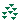

Table 6.7. 3D Plot toolbar commands.
| Icon | Command | Key | Description |
|---|---|---|---|
| Frame | Draw only the three axes. | ||
| Box Plot | Draw the three axes and the 3D box around the plot. | ||
| No Axes | Doesn't draw the axes nor the box. | ||
| Front Grid | Draw a grid on the front panel. The position of this grid is the plan defined by y=ymin. | ||
| Back Grid | Draw a grid on the back panel. The position of this grid is the plan defined by y=ymax. | ||
| Left Grid | Draw a grid on the left panel. The position of this grid is the plan defined by x=xmin. | ||
| Right Grid | Draw a grid on the right panel. The position of this grid is the plan defined by x=xmax. | ||
| Top Grid | Draw a grid on the top panel. The position of this grid is the plan defined by z=zmax. | ||
| plot -> Floor Grid | Draw a grid on the bottom panel. | ||
| Floor Grid | Draw a grid on the bottom panel. The position of this grid is the plan defined by z=zmin. | ||
| Perspective | Enables/Disables the 3D perspective mode. | ||
|
|
Reset Rotation | Resets the rotation of the 3D plot to the default values. | |
| Autoscale | Finds the best layout of the 3D plot fitting the window size. It readjusts the length of the axis ticks to a default value. | ||
| Bar Style | If the active 3D plot is a 3D histogram, this command is used to modify the style of the bars. | ||
| Dots | If the active 3D plot is a 3D scatter, this command is used to modify the style of the data points to dots. | ||
|  | Cones | If the active 3D plot is a 3D scatter, this command is used to modify the style of the data points to cones. It is then possible to modify the drawing parameters of the cones by double clicking on the plotting area. | |
|
|
Cross Hairs | If the active 3D plot is a 3D scatter, this command is used to modify the style of the data points to cross-hairs. It it then possible to modify the drawing parameters of the crosses by double clicking on the plotting area. | |
|
|
3D Wire Frame | If the active 3D plot is a 3D surface, this command is used to modify the style of the surface to a simple wireframe. | |
|
|
3D Hidden Lines | If the active 3D plot is a 3D surface, this command is used to modify the style of the surface to a wireframe. A computation of the hidden line is done. | |
|
|
3D Polygon | If the active 3D plot is a 3D surface, this command is used to modify the style of the surface to polygons. | |
| 3D Wire Surface | If the active 3D plot is a 3D surface, this command is used to modify the style of the surface to polygons with a mesh. | ||
|
|
Floor Grid | If the active 3D plot is a 3D surface, this command is used to add a filled area projection of the surface on the floor of the plot. | |
| Isolines | If the active 3D plot is a 3D surface, this command is used to add an isoline. | ||
|
|
Empty | If the active 3D plot is a 3D surface, this command is used to remove any projection from the floor. | |
| Animation | Enables/Disables animation. |